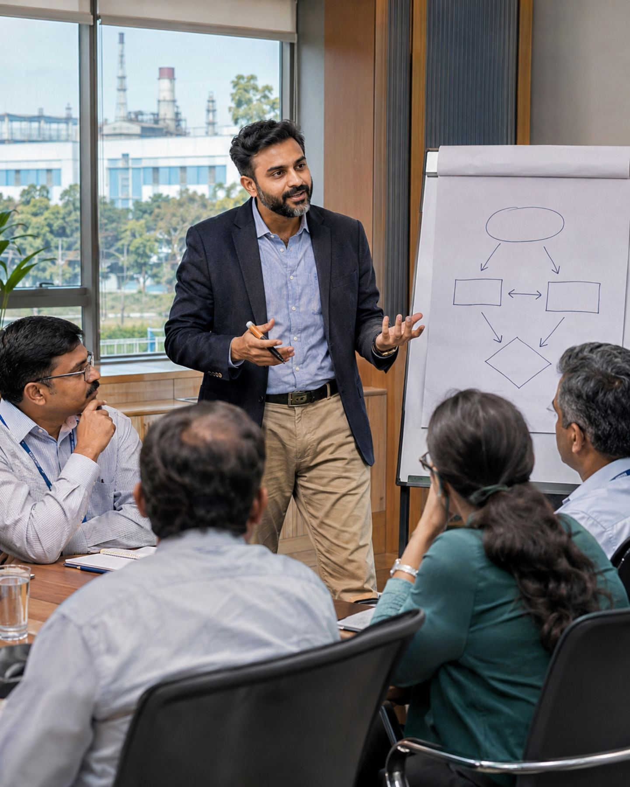
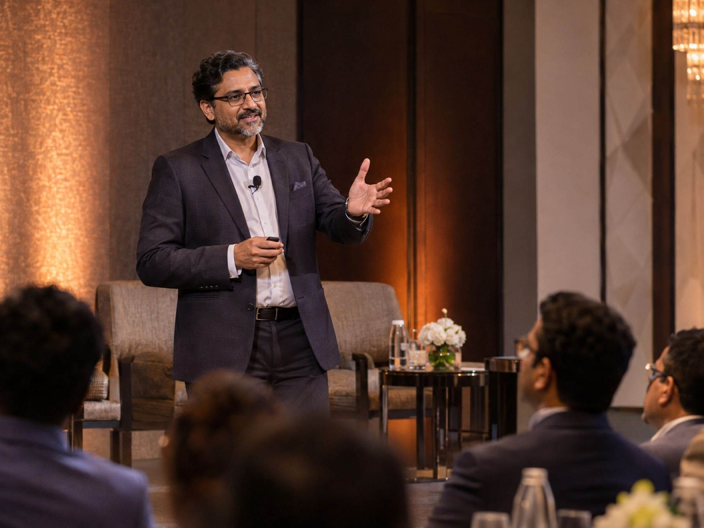

About Head & Tail Asia
Connecting business ambition with the capability to deliver.
Head & Tail Asia is a boutique management intervention firm focused on industrial B2B manufacturers and engineering businesses. We help organisations connect business strategy, sales execution, leadership capability and people practices so that these elements work towards the same commercial priorities.
Connecting business ambition with the capability to deliver.
Our work is grounded in a simple belief: organisations perform better when business decisions and people decisions reinforce each other. A growth strategy needs the right markets, customers and sales discipline. It also needs capable leaders, clear accountability, effective teams and people systems that support execution.
We work with business owners, CEOs, business heads and HR leaders to address specific challenges and build the practical capability needed to sustain improvement.

Why Head & Tail?
The name reflects the idea of coordinated movement. A tiger moves with purpose when its head and tail work in harmony. In an organisation, commercial direction and momentum must be matched by the balance, capability and coordination that enable the whole business to perform.
Sales and business leadership help set direction and create momentum. Leadership, HR and organisational systems help align people, build capability and sustain performance. Neither works at its best in isolation.
Head & Tail Asia brings these perspectives together—without treating business growth and people effectiveness as separate agendas.

What makes our approach different?
- We start with the business issue, not with a predetermined service or model.
- We connect commercial priorities with the capabilities, behaviours and systems needed to deliver them.
- We adapt interventions to the realities of industrial B2B businesses, including technical selling, long sales cycles, distributor relationships and coordination across functions.
- We work with the people who must make the change happen, building ownership rather than dependence on external advice.
- We focus on practical action, visible progress and the ability to sustain improvements.
“Ajit combines business leadership, frontline sales experience, people strategy and executive coaching to help organisations translate strategy into stronger people and better performance.”
 Tanay Kediyal
Tanay Kediyal
Our commitment
Beyond Advice. Accountable for Outcomes. We aim to leave organisations with greater clarity, stronger capability and practical ways of working—not just a presentation or a set of recommendations.

Have a business challenge that needs more than a recommendation?
Let's understand what is holding performance back and identify the intervention that can move it forward.
Start a conversation